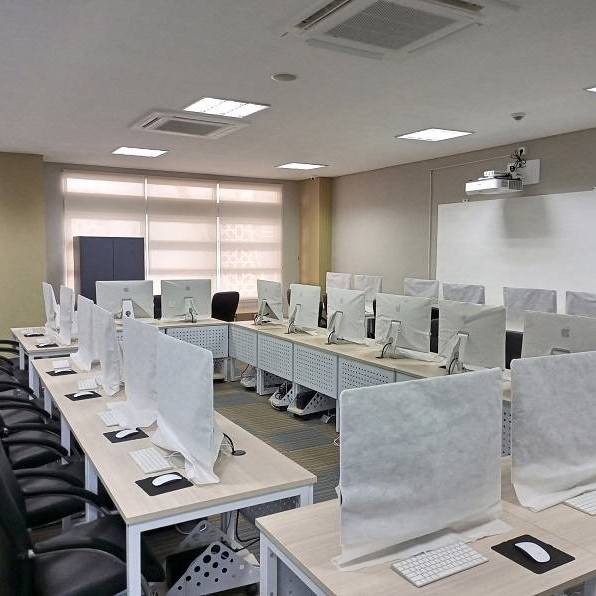
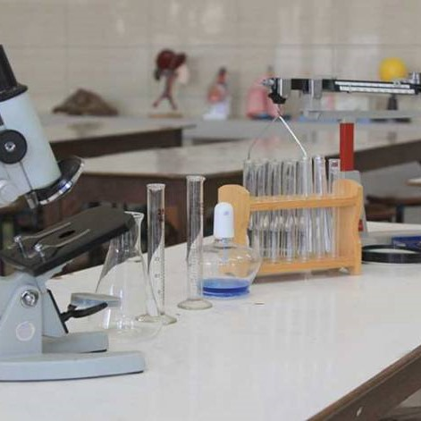
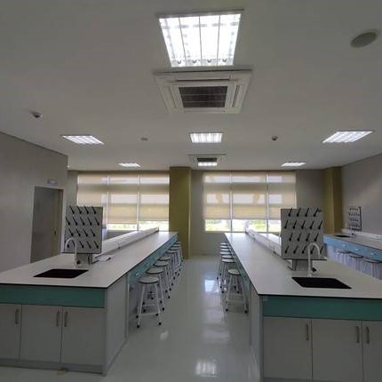

Welcome!
ditulis oleh Kalvin Julio Pranata. Pada 03 November 2022.
UPT Laboratorium Pendidikan Terpadu merupakan unit pelaksana teknis di bidang pengembangan pembelajaran dan layanan laboratorium.
Laboratorium Terpadu menyelenggarakan dan memfasilitasi kegiatan penelitian bagi seluruh civitas akademika UIN Raden Fatah Palembang (Dosen, tenaga kependidikan, mahasiswa) dan civitas akademika dari universitas lain. Penelitian yang diselenggarakan di Laboratorium Terpadu meliputi berbagai macam analisis


